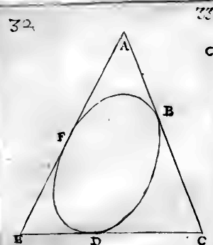
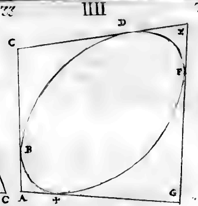
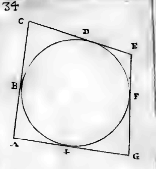
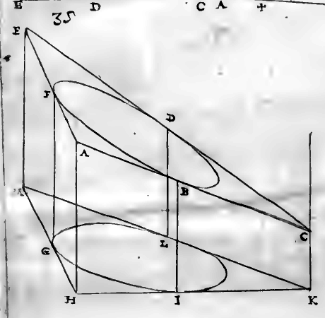
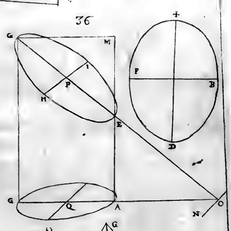
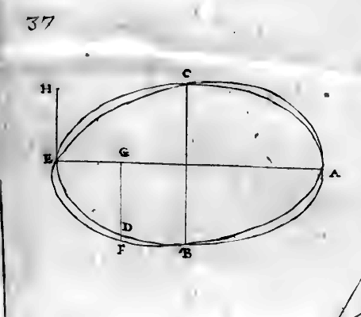

Liber Secundus · Lemmata I–III de Sectionibus Conicis¶












LIBER SECVNDVS. LEMMA I. (tab. 4. fig. 32–34)
Si qualibet figura rectilinea, circulo, vel ellipsi, ita fuerit circumscripta, vt singula eius latera praedictum circulum, aut ellipsim tangant; sic ipsa latera per contactus diuidentur, vt ratio partium vnius, ex rationibus partium similiter sumptarum reliquorum deinceps laterum componatur.
Sit circa circulum, vel ellipsim BDF, triangulum ECA, vel quadrilaterum ACEG; seu quodlibet aliud polygonum; puncta verò contactus sint B, D, F, ✠. Ostendendum est CD ad DE, in triangulo componi ex rationibus AF ad FE, & CB ad BA; sed in quadrilatero, ex tribus rationibus GF ad FE, A ad G, & CB ad BA.
In circulo tangens DC aequalis est CB; BA ipsi AF; & FE ipsi ED; (si figura circumscripta triangulum sit) ergo quia CD ad DE componitur ex rationibus DC ad CB; CB ad BA; BA ad AF; AF ad FE; FE ad ED; si auferantur rationes aequalitatis DC ad CB; BA ad AF; FE ad ED, remanebit composita ex duabus tantum rationibus CB ad BA; AF ad FE, vel ex ijsdem perturbatè acceptis; nempe AF ad FE, & CB ad BA. Eadem ratione demonstrabimus in quadrilatero, quod circumscriptum est circulo, rationem CD ad DE componi ex rationibus GF ad FE; A ad G, & CB ad BA: quarè manifestum est id, quod proposuimus, quoties triangulum, seu quadrilaterum, vel quodlibet aliud polygonum fuerit circa circulum.
Sed si fuerit circa ellipsim, fieri potest, vt cylindrum aliquem inueniamus, cuius eadem proposita ellipsis sit sectio (hoc autem inferius demonstrabimus) huius itaque cylindri basis sit circulus
f. 0053 · p. 36GLI, dicta verò ellipsis sit sectio cylindri, quam indicent literae FDB, cui circumscriptum sit triangulum EAC; à contactibus verò FDB circumscriptae figurae cadant in puncta GIL circumferentiae, lineae FG, DL, BI; deindè plana ducamus per EA, FG, AC, BI, & EC, DL, haec tangent cylindri superficiem secundùm lineas FG, DL, BI. Producto demum basis plano sint omnes horum planorum communes sectiones ME, AH, CK; itemque MGH, HIK, KLM. Et quia priora plana ducta sunt per lineas FG, BI, DL, quae inter se sunt aequidistantes, erunt & eorum planorum communes sectiones, veluti AH, CK, EM inter se, & lateribus praedictis FG, BI, DL parallelae; ideòque erit AF ad FE, vt HG ad GM, CB ad BA, vt KI ad IH, & CD ad DE, vt KL ad LM; componitur verò, in circulo GLI, ratio KL ad LM ex rationibus HG ad GM, & KI ad IH; ergo etiam CD ad DE componetur ex rationibus AF ad FE, & CB ad BA. Similiter ostendemus in quadrilatero CBAGFED, rationem CD ad DE componi ex rationibus EF ad FG; A ad G; & CB ad BA. Eodem processu vtemur, si circumscripta sit figura quaelibet alia, quod erat &c.
LEMMA II. (tab. 4. fig. 36)
Reliquum est vt ostendamus id, quod in superiori lemmate assumpsimus; proposita videlicet qualibet ellipsi, puta FDB, cylindrum quendam reperire, ipsumque plano sic abscindere, vt facta sectio, similis, & aequalis sit propositae ellipsi.
Sit axis propositae ellipsis linea D, secunda verò diameter FB, cui sumatur aequalis AC, circa quam describatur circulus AC; iam quilibet Cylindrus rectus, non autem Scalenus, super dictum circulum, tanquam basim constitutus, erit quaesitus. Ponamus illum esse, cuius parallelogrammum per axem sit AMGC, & ipsius diagonalis GA maior sit axe D, latus verò GM sit minus axe: ergo si centro G, interuallo linea GE aequali D, circulus describatur, diuidet eiusdem circuli circumferentia lineam AM; sit ideo sectionis punctum E, & iuncta GE producatur ad partes basis, vt secet AC productam in O, à quo puncto agamus lineam ON in eodem circuli plano perpendicularem
f. 0054 · p. 37ad OC, perque lineas ON, GEO, ducto plano, fiat in cylindro sectio GIEH, quae cum ellipsis sit, ostendemus etiam esse similem, & aequalem propositae FBD. Diuidamus enim rectam EG bifariam in P, per quod vtpote centrum ellipsis transeat vsque ad cylindri superficiem ex vtraque parte producta recta IPH parallela NO, erit haec propterea ordinatim applicata, & ad rectos angulos ad axem EG, & ideo linea IPH dicetur secunda diameter, quae quidem aequalis erit ipsi AC, seu FB. Iam si concipiamus ellipsim EIGH superpositam ellipsi DFB, ita vt congruat linea D lineae GE, congruet etiam linea FB ipsi IH, atque adeò (quod etiam ostendemus) ellipsis ellipsi coaptabitur, quod &c.
LEMMA III. (tab. 4. fig. 37)
Si, concepta ellipsi super ellipsim, duae coniugatae diametri vnius, duabus alterius congruerint; erunt ellipses praedictae inter se similes, & aequales.
Sit ellipsis FABCE superposita ellipsi BACED, quarum coniugatae diametri AE, BC communes sint. Dico sectiones istas sibi inuicem congruere; Nam si fieri potest assignetur aliquod punctum veluti F, quod sit in vna tantùm ellipsi. Ordinatim applicetur ad diametrum EA linea FDG secans alteram ellipsim in D, dictamque diametrum in G: indè à puncto E constituamus ad rectos angulos ipsi AE rectam EH tertiam proportionalem duarum EA, BC; Erit igitur EH latus rectum, & EA transuersum; verùm quia tàm applicata FG, quàm DG potest idem rectangulum GEH deficiens figura simili, & similiter posita ei quae lineis AE, EH continetur, erunt dictae duae applicatae, propter ellipticas sectiones, longitudine etiam inter se aequales, totum scilicet parti, quod est absurdum; quare non potest assignari punctum, quod in vtraque ellipsi non existat, atque adeò praedictae ellipses similes, & aequales inter se erunt, quod &c.